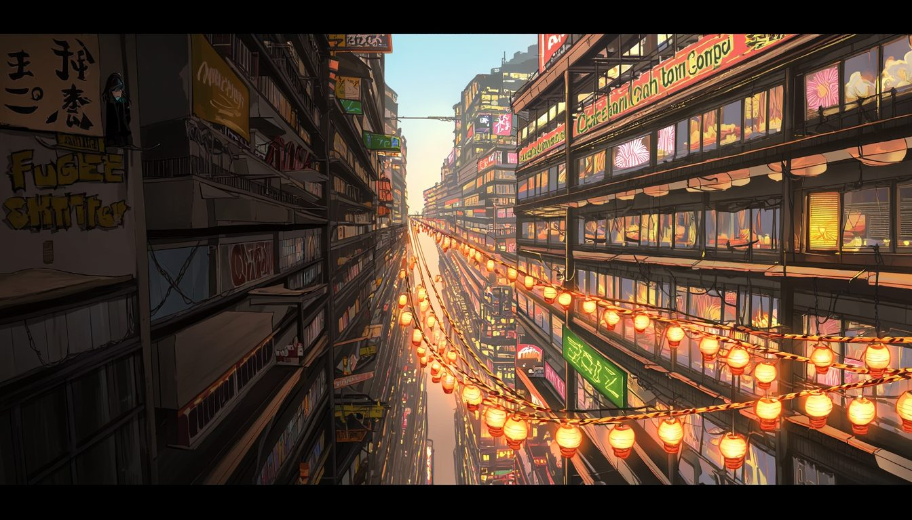
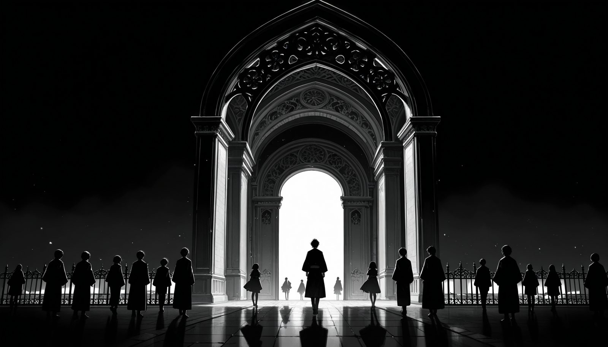
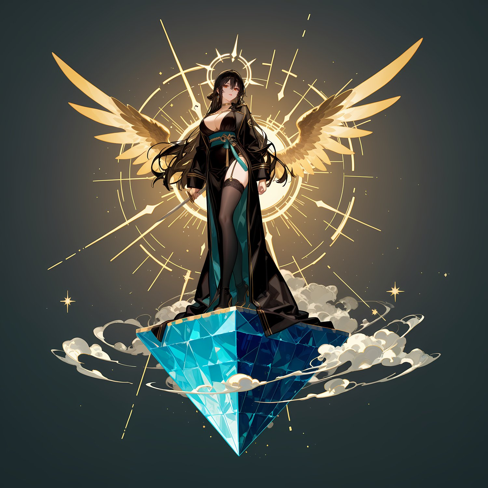
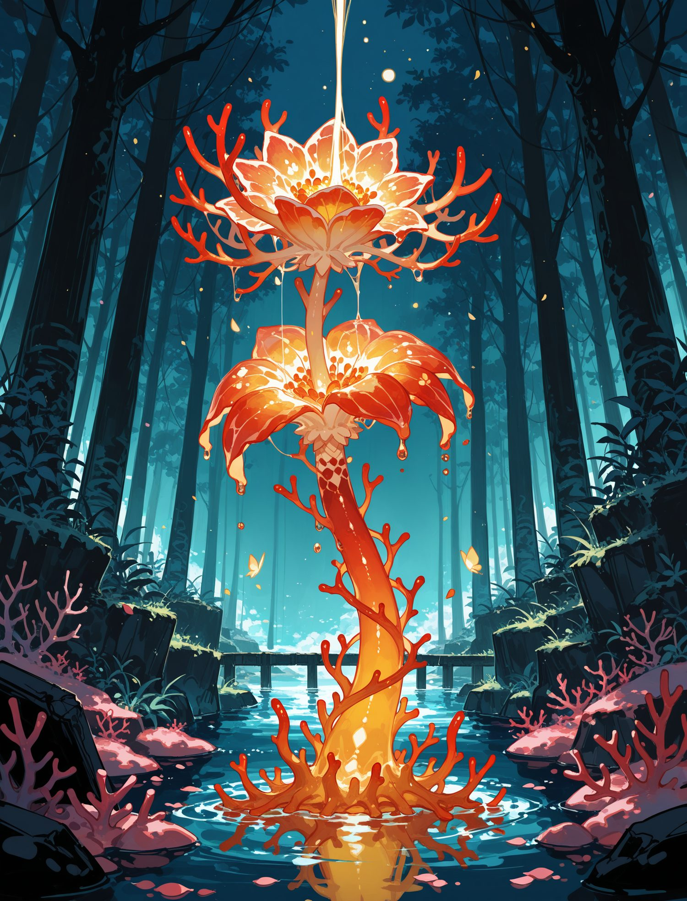
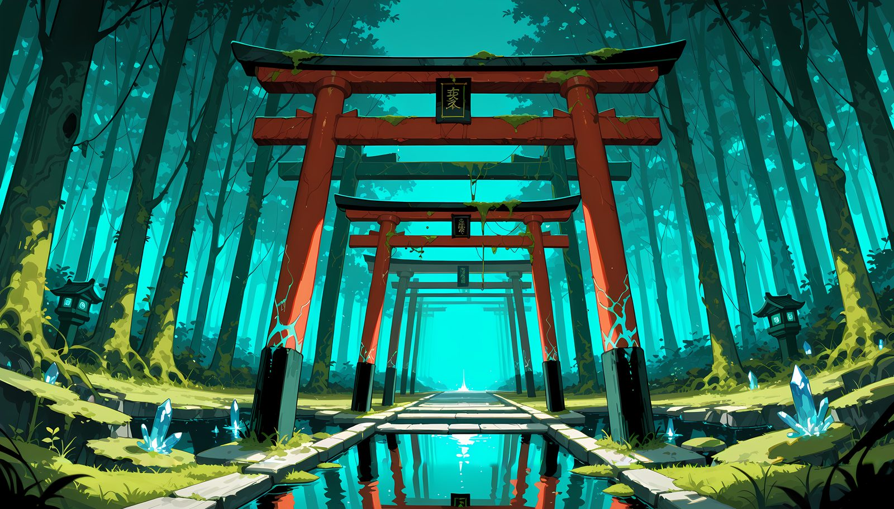
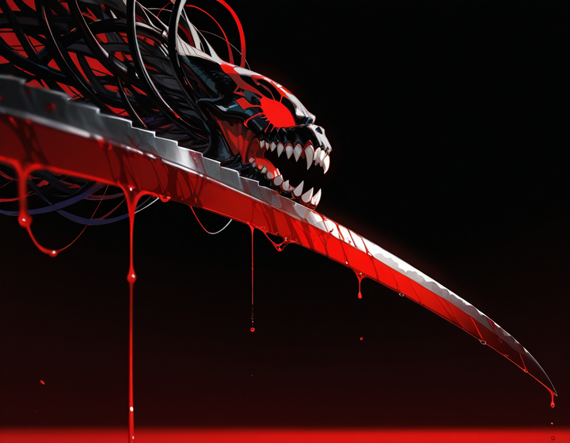
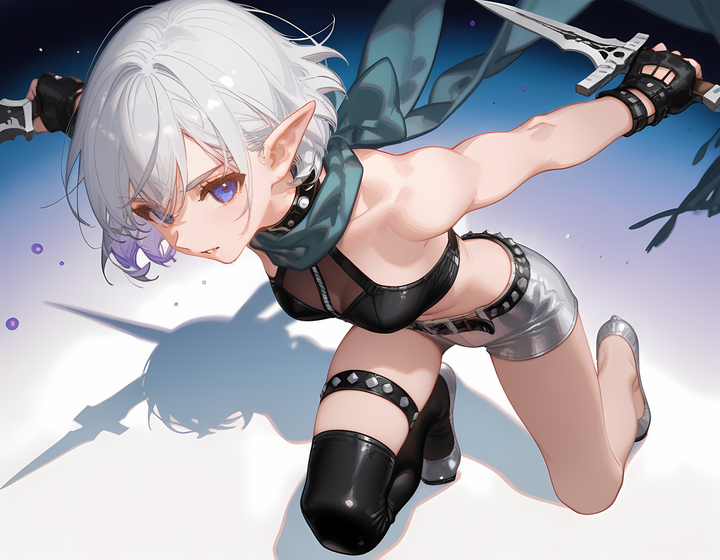

One director, a fleet of AI agents, and a card-combat tactics roguelite that rebuilt its own engine twice. What worked, what broke, and how the workflow kept reinventing itself.
I did something slightly unhinged this month. I built a game, a real one, an isometric card-combat tactics roguelite with a story campaign, hundreds of cards, animated sprites, bosses, and a shippable Windows .exe, almost entirely inside Claude Code. Not "Claude helped me write some functions." I mean the model wrote the engine, tuned the balance in a simulator it also wrote, generated the art through a pipeline it operated, playtested against logs I fed back to it, and cut fifty numbered builds, while I did the one thing it couldn't: decide, over and over, exactly what we were building.
This is the field report I wish I'd had at the start. It's not a tutorial and it's not a victory lap. It's the honest shape of what a three-week, fifty-build run with an AI agent actually looks like: the workflow that emerged, the four times it reinvented itself, the disciplines that kept it from collapsing, and the bugs that taught me which of my tools were quietly lying to me.
If you're a game developer wondering how to actually work inside a tool like this (not toy prompts, but a real project with locked design values, a build pipeline, and the constant risk of an over-eager model helpfully rewriting your combat math), this is for you.
One idea sits ahead of every tactic that follows: the model will build whatever you can clearly specify, so the real skill is knowing precisely what to ask for. Twenty years of making games is most of what taught me to do that, and it's the reason this stayed a game instead of drifting into a tidy web app with combat bolted on. I'll come back to it, because it matters more than any single trick in here.
01 · The subject
Stratum-Break is a fantasy, Baldur's-Gate-flavored, class-based turn-based game where every action is a card and the battlefield is an isometric grid with real terrain: surfaces that catch fire and spread, elevation, hazards. It ships as one Windows executable: a Phaser 4 game running inside a WebView2 shell. There are two modes sharing one engine (a story campaign and a Slay-the-Spire-style roguelike run), plus a party of recruitable heroes, four distinct classes, and a card library deep enough that "which cards are even legal to change" became a governance problem.

The reason any of this matters for a "working in Claude Code" write-up is that Stratum-Break is exactly the kind of project that punishes a naïve prompt-and-pray loop. It has invariants: numbers I tuned that the model must never "improve." It has a build that behaves differently in the shipped .exe than in the dev server. It has art that costs GPU-minutes to regenerate. And it's big enough that no single context window can hold it. Every lesson in this piece is a scar I picked up from one of those four facts.
Before build one · the part no model brings
I've spent about twenty years in and around games: tester, designer, security lead, analyst, product lead. I'm not saying that to pad a résumé. I'm saying it because it was the load-bearing beam of this whole experiment. I don't think it worked despite being mostly built by an AI. It worked because I could say, precisely and repeatedly, what I actually wanted.
Here's the thing a slick demo never shows you. An AI will build, fast and genuinely well, exactly what you can specify, and in every gap you leave, it fills the space with the generic. It has no taste for your product. It doesn't know what's fun. Point it at a problem and it writes clean, correct, reasonable software, and "clean, correct, reasonable" is not the same thing as "a game."
That gap was a live threat the entire time, because this game is built in web technology: a Phaser canvas inside a browser shell. The gravity of the stack pulls constantly toward a competent web application that happens to have combat in it: menus that behave like forms, a fight that resolves like a database transaction, screens that are technically correct and completely dead. Nobody sits down and decides to build that. You drift into it, one reasonable-looking commit at a time.
So my real job across fifty builds, more than any prompt I wrote, was to keep answering the two questions the model simply cannot answer for you: Is this fun? and Does this serve the pillar? A card-combat game lives or dies on feel: the weight of a hit landing, the readability of the board at a glance, the tension of a run you might actually lose. None of that shows up in a spec unless you put it there and then defend it, because none of it makes a build "pass." I kept a short list of non-negotiables: dynamic terrain is core, no dead cards, readability over spectacle, difficulty that's tuned and not merely present. Every time a build wandered, I could point at the exact pillar it broke and name the fix. Without that list written down, "better" has no definition, and an AI handed no definition of better will quietly optimize for done.
The biggest predictor of whether you get what you wanted out of a tool like this isn't prompt-craft, and it isn't which model you run. It's whether you can state your product, your design pillars, and your requirements clearly enough to defend them under pressure. If you can't, you'll stray from your idea fast, or, worse, drift from it slowly, because slow drift you don't notice until you're a month and a hundred commits away from the game you meant to make. The model removes the labor of building. It does not remove the judgment of knowing what to build. If anything, it raises the premium on it.
02 · Phase one
The first nine builds were ordinary. One Claude Code session, one human, a normal back-and-forth. We stood up the whole skeleton this way: the isometric renderer, the card engine, the initiative queue, enemy AI, pathfinding, sixty-odd cards, a dozen status effects, three missions.
It worked, and then it hit a wall that anyone doing serious solo work with an agent will recognize. Two walls, actually, and they're the reason everything after this section exists.
A single session is a serial bottleneck. While the model regenerates a batch of art, it isn't fixing the combat bug. While it's deep in the combat bug, the card library sits untouched. For a hobby script that's fine. For something with an art lane, an engine lane, a content lane, and a QA lane all wanting attention at once, one session means three of the four are always idle.
And a session's context window is a single point of failure. A token outage, an app restart, a context that grows too long and gets compacted, any of these can drop the thread. Early on that felt survivable. It stopped feeling survivable the moment the project got big enough that "re-explain the whole codebase" cost more than the actual work.
Both problems have the same answer, and it's the single most important thing I learned: put the operating model on disk, not in a session. Runbooks, a live status file, a coordination board, a decisions ledger, and cross-session memory. If the entire state of "how we work and where we are" lives in files in the repo, then any fresh session, after any crash, restart, or machine swap, reconstructs it by reading. The conversation becomes disposable. That realization is what made everything else possible.
03 · Phase two, peak orchestration
So I stopped running one session and started running a fleet. Multiple concurrent Claude Code sessions, each a fixed identity working one lane, coordinating entirely through files in the repo. At its peak there were around thirteen of them.
The mechanics are worth spelling out because they transfer to any multi-agent setup, not just this one.
Git worktrees are the load-bearing trick. Each stream that needed isolation got its own checkout:git worktree add .claude/worktrees/<name> -b claude/<name>, an independent working tree on its own branch that merges back to master every iteration. The streams committing directly to master (the engine lane, the content lane, and the governor) worked in the main repo; everyone else lived in a worktree. No two agents ever fought over the same files on disk.
No chat backchannel, no shared account state, nothing that would evaporate on a restart. A protocol file was "the law": topology, the rules, the exact formats for a cross-stream request or an escalation. A coordination board carried the running conversation between agents: TO FORGE: the card-face band is hard-coded to 236px, can you widen it? (blocking me). A decisions ledger recorded every autonomous call the governor made, git-reversible. It reads like a ship's log because that's exactly what it is.
The constitution was seven rules, and if you take nothing else structural from this report, take these:
Rule five saved me more times than any other. When several agents are landing commits minutes apart, the file you read at the top of your turn is stale by the time you go to edit it. "Re-read immediately before editing" sounds obvious written down; it is the difference between a clean merge and silently clobbering another stream's work.
Every stream tested on its own server port and its own browser origin. This prevented an entire class of ghost bug: a worktree serving on one port while the preview tab points at master's port, so your unmerged work is simply invisible and you "fix" a bug that was never broken. The rule became a reflex: check your URL first, every single time.
One persistent session sat above the fleet as the governor. Its job wasn't to write features. It was cross-stream judgment: enforce the invariants, do the path-scoped commits on contended files, bank a build when a slice was ready, and resolve conferrals by quoting the relevant rule verbatim before ruling. There was exactly one, ever. After an early incident where two governors briefly ran at once and started forking decisions, "check whether another governor is alive before you arm" became step zero of its cold-start. If two streams touched the same system incompatibly and it needed real judgment, the rule was blunt: flag me and stop. Never resolve a genuine semantic merge conflict by model inference alone.
04 · What worked
A fleet of eager agents will cheerfully destroy your game if you let it. These are the practices that kept fifty builds coherent, each one earned, most of them the hard way.
This is the single most important guardrail I put on the whole project, and I learned to need it fast. I tuned the card values by hand, and the model must never touch them, not to "fix" a bug, not to "balance" a class, not ever, without my explicit sign-off. Left to its instincts, a helpful model asked to fix a targeting bug will occasionally nudge a damage number because that also makes the symptom go away. In a game where the balance is the product, that's catastrophic, and it took me exactly one silent nudge to decide it could never happen again.
The enforcement I settled on is almost stupidly simple, which is exactly why it works. Before any build, a diff of the locked files against a ratified baseline has to come back empty, no exceptions:
# value-guard: must print NOTHING git diff 725f45c4 HEAD -- \ src/data/cards.js \ src/systems/CardEngine.js \ src/roguelike/data/ $ (no output) → safe to build $ + damage: 7, → STOP. a value moved. do not ship.
git diff. The subtle failure: for several builds the guard omitted one engine file, and legitimate-looking edits slipped past. The guard must cover every locked file, or it isn't a guard.An audit of the card engine surfaced hundreds of flagged cards. The tempting response, the response a model reaches for by default, is to patch each one. My standing directive, which became a memory the model reloads every session, was the opposite:
Reject symptom-masks. Fix the root cause, and write a validator that enumerates the complete defect set.a directive that became project law
So instead of whack-a-mole, the model built a validator that clustered 871 flagged cards down to a handful of systemic engine faults: a target-validation bug, a status-ordering bug, a splash-resolution bug. It fixed those and watched the flag count fall to 561 as a consequence. That's the whole philosophy: when an AI hands you a hundred symptoms, make it find the dozen causes.
The most productive channel on the entire project was almost embarrassingly low-tech. Every playtest build writes a debug session log to disk as I play. Claude reads the newest log directly off the filesystem, no copy-pasting, no screenshots to describe, including render diagnostics snapshots the game emits into it. A triage script sorts the faults from the noise. I play, it reads, it fixes, I play again.
Don't theorize, read the log.the rule that replaced a hundred guesses
The counterpart to reading real logs is verifying through the real input path. A combat "test" that zeroes an enemy's HP directly is a false positive: it proves nothing about whether a click actually lands a hit. A synthetic mouse event injected below the app is a false negative: it can miss a real, working interaction. The only faithful gate is a real DOM click driving real engine damage, both directions. I burned a day early on to a "bug" that was actually my test lying to me before that rule crystallized.
The practice I'd most recommend to anyone doing serious work with agents: before you trust a fix, spend a few more agents trying to refute it. Not review it, refute it, actively, from independent angles.
This paid for itself in cash. A five-agent adversarial pass on a bug I thought was fixed found a ship-blocker, a card type that matched no highlight branch, which is to say the exact symptom the fix was supposed to eliminate. It never shipped. As the ledger dryly noted: that blocker would have read to me, the player, as "the fix isn't fixed."
The most striking instance was a hardening batch that ran as a self-re-auditing loop: the model kept re-reviewing its own output round after round, twenty-three rounds deep, landing seventy-eight fixes with zero regressions, and at one point catching a regression of one of its own earlier fixes. An agent that audits its own work with genuine adversarial intent is a different tool than one that just writes it.
When a research or audit agent claims "this ships on the existing engine with zero new code," that claim gets checked against the actual source before I believe it, because a confident sentence from a model is not evidence. A design-concept judge once rejected a proposed card layout specifically because it checked the concept against the code and found a hard-coded 236-pixel band it wouldn't fit into. The agent's prose is a hypothesis; the repo is the truth.
Commits are cheap; builds are not. A build is a version bump, a ~1.5 GB zip, a manifest gate, and a delivery push. So the cadence split: commit once per completed item, but cut one build per coherent batch, never a build per fix. This sounds like a minor logistics note. It's actually what let the fifty-build number stay meaningful instead of ballooning into five hundred vanity re-cuts.
Roughly eighty-five one-topic memory files sit behind an index the model loads every session. They're distinct from build-state (that lives in git and a status file), memory is for durable lessons. It's where a directive spoken once becomes policy the model never relitigates: the value-lock, "fix the core," the batch cadence, "reuse ripped voice lines, never robotic text-to-speech." And it's where hard-won technical traps get filed so they're never rediscovered, a specific way stubbing the random-number generator to zero collides with the engine's texture IDs and produces fake errors, for instance. This is the difference between a tool that re-learns your codebase every morning and one that compounds.
05 · What broke
The disciplines above are all reactions to specific disasters. Here are the disasters. Every one of them left a scar that became a rule.
At high render-scale settings, the roguelike board went black and off-center. It looked, unmistakably, like a rendering bug. We chased it as one: capping the render scale, splitting the camera, hypothesizing about post-processing. Every one of those was a wrong band-aid on a symptom.
The real cause wasn't rendering at all. It was one line of camera math. To center the board, the code computed the scroll position by subtracting a fraction of the viewport size divided by the zoom. That formula is only correct when zoom equals exactly 1. At the 3× render scale a 4K display uses, it threw the board's center off by 125%, straight out of view.
Two lessons fell out of this, and the second is the deeper one.
First: when a battle-tested engine gives you a primitive, centerOn, use it instead of re-deriving the arithmetic. The same divide-by-zoom mistake showed up in three different places, because the same faulty mental model got typed out three times. A diagnostic overlay I'd written to debug it even reproduced the bug in its own readout, for the same reason.
Second, and this is the one I keep coming back to: know which of your verification tools lie to you. I was trying to measure the render by opening the browser dev-tools, but on this stack, opening dev-tools resizes the very window whose size I was trying to measure. The measurement changed the thing measured. The fix was to stop trusting dev-tools for this and build an in-app diagnostics overlay that draws its numbers onto the game canvas itself, then screenshot that. A whole category of my debugging tools were Heisenberg instruments, and I didn't know it until one of them lied to my face.
.exe, because the manifest gate hadn't been told about them.For a while the roguelike and the campaign were separate code. Convenient at first; expensive forever after. A camera improvement landed in the campaign and not the roguelike, so the roguelike's camera silently regressed to an older, buggier version and the corner-drift bug came back from the dead. Same story with the high-def tile downscaling: the campaign got it, the fork didn't, and the roguelike shipped blurry tiles for builds. Every divergence was a second place to fix the same bug, and I kept forgetting the second place existed.
The rule I wish I'd started with: one stack, two modes: fork the data, never the code. The campaign and the roguelike now share one combat scene, one systems layer, one UI, and differ only by a mode configuration. Forking code to move fast is borrowing against a debt you'll pay every single time you touch the shared behavior afterward, and with an AI doing the touching, it'll faithfully fix only the copy you pointed it at.
06 · Phase three
Here's the twist the peak-orchestration crowd won't want to hear: I retired the fleet. It was the right call, and the reason is a sentence I'd underline for anyone tempted to build a standing army of agents.
Its coordination overhead was most of the repo's clutter.from the project's own operating notes
A standing fleet buys you continuous throughput and charges you a permanent tax: merge races, a coordination board full of noise, stale worktrees, cron schedules that die on every restart and must be re-armed, and (the big one) the cost of several frontier-model sessions all awake on a tight cadence. For a solo director, that tax turned out to be larger than the benefit.
The replacement is the model I'd now recommend as the default: one home session does the work, and when I need a burst of parallelism, I fan out ephemeral subagents or a scripted workflow. They spin up, do read-heavy fan-out work (search, audit, judge, research), return their results, and vanish, leaving no worktree, no cron, no comms residue to clean up. Burst parallelism with zero standing overhead. As the notes put it bluntly: five coherent streams beat thirteen.
07 · The turn
Around build forty, the largest change in the project's history landed, and it landed as one build. A total narrative re-theme and an engine-architecture rebuild, at the same time.

On the architecture side, the standalone roguelike, which had been its own separate web app with its own entry point, was folded into a single game process with the campaign. Fourteen scenes, an in-page mode switch, no reload. The old campaign menu-hub was torn out entirely and replaced by that living-painting front door you saw at the top. This is the moment "one stack, two modes" stopped being an aspiration and became the actual code.
Doing a re-theme and a re-architecture in one motion is exactly the kind of sweeping, multi-file, high-context change that I would not hand to a fleet of narrowly-scoped agents landing commits minutes apart. It wanted one coherent mind holding the whole shape. It's a useful counterweight to all the parallelism above: the biggest changes often want fewer hands, not more.
And the call to make it at all was mine to make, the kind of thing no model initiates. The old setting wasn't landing; it wasn't serving the game I could feel underneath it. That's not a bug an audit surfaces or a test that fails red, it's a taste judgment, exactly the sort the section up top was about. The model executed the pivot beautifully once I'd decided it. Deciding it was the part that was mine.



Aside · the hardest part
Everything you've seen in this post (the heroes, the boss, the cards, the living painting at the top) was generated. There was no artist on the team. And getting a pile of generated images to look like one game was, by a wide margin, the least predictable, most maddening part of the entire project.
I want to be honest about this part, because the code side of working with an AI is legible in a way the art side simply isn't. Code either compiles or it doesn't; a test passes or fails. Art generation is a slot machine wearing a lab coat. You can do everything right and get garbage, do everything lazily and get a gem, and have no idea which lever mattered. Taming that was its own multi-week discipline, and it looked nothing like the engineering.
The first decision was to run image generation locally, on a single consumer GPU, through a node-based pipeline I wired up on the same machine as everything else. The math was simple: this game needs hundreds of card arts plus dozens of character passes plus environments plus effects, and paying per-image or waiting in a cloud queue for that volume of iteration would have been both ruinous and glacial. Local meant I could reroll fifty times at three in the morning for free.
The tax for that freedom was a hard ceiling. There is an exact resolution above which a render stops fitting in the card and the whole machine grinds: the GPU thrashes, a job that should take seconds takes minutes. You learn to feel it coming. Half the "pipeline" was really just discovering, empirically, the largest thing I was allowed to ask for.
Here's the thing nobody tells you: the hard problem isn't making a good image. It's making the next one match. Early on, every asset looked fine alone and terrible together, like screenshots from ten different games stapled into one. A real art director spends years internalizing a house style. I had to externalize one: pin down a lighting rule, a rendering feel, a palette, write it down, and then re-impose it on every single shot, because the generator's native instinct is to drift somewhere new every time you ask.
Characters would not hold their design. Ask for the same hero twice and you get two different people: the hair changes, the outfit reinterprets itself, the proportions wander. For a roster you'll see across cards, sprites, and splashes, that's fatal. What finally worked was a two-step lock: write each hero's design down as canon, an exact, non-negotiable description, and then train a small custom model per character so their identity is baked into the generation instead of re-rolled from a text prompt every time. Getting a single hero fully locked took on the order of ten art-direction passes. Ten. For one character. And that was the fast one, the one whose process became the template for everyone else.
Beyond consistency, a rotating cast of specific, almost funny failures ate days each:
Everyone who has touched generated art knows. The winning move wasn't to demand a perfect hand. It was to hide the problem: pose the hand edge-on with the fingers curled, so there's simply nothing to miscount. You don't fix the tell. You compose it out of frame.
Ask for the art of an ability (a venom strike, a roaring charge, a defensive stance) and the generator compulsively plants a person or a creature in the dead center of it. For a card that's supposed to depict an object or an effect, that's wrong every time. The fix was to anchor the prompt on a concrete, physical still-life object and strip out the words that summon a figure. Describe the blade, not the swing.
The bioluminescent creatures refused to separate from their backgrounds. The usual cutout left glowing ghosts or shattered the translucency into confetti. The trick: render them on pure black and derive their transparency from their own brightness, so the glow becomes the silhouette instead of fighting it.
Because every one of these could reappear on any given render, the rule became a fixed loop for anything that shipped: generate, audit it against the character's canon and for stray garbled text or logos, remediate, rebuild, and above all, learn the prompt that works rather than rerolling until you get lucky, because luck doesn't transfer to the next asset and a learned recipe does. Paired with a hard gate: an approved, locked character final is never overwritten. Candidates get staged; promotion happens only on an explicit human yes.
The honest summary is that "the art is AI-generated" both is true and badly undersells it. Generation was the raw material, not the finished good. The finished good came from taste, an ocean of discarded renders, and the patience to treat a slot machine like a craft. If the code side of this project taught me how to direct an AI, the art side taught me how to survive one.
08 · Phase four, the sharpest lesson
For one concentrated feature push near the end (animation, the run-map, the shop, and a whole new enemy family of angels and demons), I stood the streams back up. And I made a mistake that produced the single most transferable insight of the entire project.
The governor, now running on a more capable model than when it was first designed, started doing something reasonable-looking: when a stream proposed a design decision, the governor routed it up to me with a nicely-formatted question. It was, in effect, proxying my direction. And I stopped it cold:
You are not here to direct questions to me. You are here to properly merge commits I agree to.me, to the governor, near the end of the run
That correction is worth more than any diagram in this report. The failure mode is subtle precisely because the model is capable: a smart orchestrator will happily grow into a decision-router, and a decision-router that duplicates the work you're already doing directly with each stream becomes a bottleneck wearing the costume of a coordinator. I was talking to each stream about its design anyway. Having the governor also mediate those decisions added a layer and subtracted nothing.
As your orchestrator gets more capable, resist the urge to make it a proxy decision-maker. Keep it on integration and invariants: merge the agreed commits cleanly, enforce the value-locks, hold the single-writer discipline on contended files, keep master buildable. Keep taste and design with the human. The most capable configuration is not the one where the AI decides the most; it's the one where the AI owns the mechanical truth and the human owns the judgment. A merger, not a router.
09 · The whole run
Eight eras, two starred milestones, and two long "letter-suffix" grinds where a single number spawned two dozen same-day re-spins driven by live playtest. Here's the shape of it.
A note on those grinds, because they're the most Claude-Code-specific thing here. Twice, once in Era 3, once in Era 6, a single version number sprouted twenty-five same-day lettered re-spins. That's what live playtesting with an agent looks like: I play the debug build, the model reads the log off disk, fixes two or three things, cuts a re-spin, and I play again, over and over, deep into the night. The card values never moved through any of it. That combination, furious surface iteration on top of a frozen mechanical core, is only sustainable because the value-lock made "furious" safe.


Three cards from the current roguelike, Yumi's rogue deck, rendered live with the game's own finish system: a clean common, an uncommon with its green shimmer sweep, and a rare in the borderless blue-glow frame (the roguelike rarity ladder tops out at rare). They're also a real line of play, mark → bleed → execute. Hover any card for the lighting.
10 · the honest part
A field report that only lists wins is marketing. Here's the real ledger, mess included, because the mess is where the method came from.
Across nineteen days the project took 4,360 commits and produced 87 downloadable builds. Do the division and it's sobering: about fifty commits per build, which means roughly 4,270 iterations, 98% of everything the fleet did, never became a build a player could touch. A good chunk of those were coordination chatter between agents rather than code. But the ratio is the point, not an embarrassment: cheap commits are where the model explores, argues with itself, and reverses out of dead ends; expensive builds are the rare moments something was actually ready. The whole discipline was keeping those two numbers far apart.
47 of those commits were reverts, forty-seven times the fleet undid its own work, most often because a fix I'd shipped in an earlier build traded one bug for another. 44 more were explicitly labeled root-cause commits: the moments the model stopped patching symptoms and went for the actual cause. And the "fix" loop genuinely recursed on itself more than once: one hardening pass re-audited its own output twenty-three rounds deep and caught a regression of a fix it had made earlier in the same run. Somewhere around 800 commits carry the word "fix" and another 285 name a bug outright. I won't pretend those are all distinct defects, some are the same bug chased across three builds, but the shape is honest: this was mostly bug-chasing, not feature-writing, and the tooling that made bug-chasing fast mattered more than any burst of new code.
I had to pull the model back into its lane at least fourteen times, firmly enough that each correction got written into its permanent memory, so no future session would relitigate it. They ran from "stop asking me to approve every tile" to the blunt "you are here to merge commits, not route questions." Those corrections aren't failures I'm hiding; they're half the reason the method works at all. Every one became a one-line rule the next session inherits for free.
Several times the model simply lost the thread, a context window filled and compacted mid-task, and it rebuilt its whole understanding by re-reading the status file and the handoff docs. That's not a bug in the process; it is the process. The entire "put the operating model on disk" idea exists precisely so that losing the conversation costs a few minutes of reading instead of a day of re-explaining the codebase.
And more than once the model reached past what I'd actually asked, tried to make me answer a question that was its own to work out, or pulled me down into a decision below the altitude I wanted to fly at. Routing a stream's design choices up to me when I'd already handled them directly. Making art-direction calls that were mine to make. Each of those became a rule too. The method in this report isn't a tidy list of things that worked. It's the residue of everything that didn't, written down so it would only ever cost me once.
11 · If you only read one section
Strip away the game and this is the transferable core, the things I'd hand another developer starting a serious project inside Claude Code tomorrow.
This one sits above all the rest, and everything below quietly assumes it. Be able to state your product, your design pillars, and your requirements clearly enough to defend them, because the model will faithfully build whatever you specify and quietly generic-ify whatever you don't. Domain expertise doesn't matter less when the AI does the building; it matters more, because now you can drift away from your own idea in a week instead of a year. Everything that follows is just how I kept from drifting.
Runbooks, a live status file, a coordination board, a decisions ledger, cross-session memory. If how-you-work and where-you-are live in files, any fresh session reconstructs the state after any crash, restart, or machine swap. Define an explicit cold-start ritual: read these files, in this order. The conversation is disposable; the repo is not.
Reach for subagents and scripted workflows for parallel bursts. They return results and leave no residue. Stand up a persistent multi-session fleet only for a rare, genuinely-parallel big push, and tear it down right after. Standing coordination is a real, ongoing tax that mostly isn't worth it for a solo dev.
Integration and invariants for the AI; taste and design for the human. A capable orchestrator will drift toward proxying your decisions. Don't let it. The best configuration isn't the one where the model decides the most.
Whatever your equivalent of "the balance numbers" is, make touching it require an empty diff before every build. A helpful model will "improve" the thing you least want improved. The guard must cover every locked file, or it isn't one.
Before you trust a fix, spend agents trying to refute it from independent angles, each defaulting to "refuted" when unsure. And check every load-bearing claim against the actual code, never against the model's confident prose. This catches the "the fix isn't fixed" class of bug that would otherwise read to your user as your failure.
When an audit hands you a hundred flags, make the model find the dozen causes and write a validator that enumerates the full defect set. Reject green-by-rename. Whack-a-mole with an AI is infinitely patient and infinitely wrong.
Mine was: play a debug build, let the model read the session log straight off disk, verify through the real input path. Batch your builds, commit per item. And stay suspicious of your instruments: the dev-tools panel that resizes the window it's measuring, the test that zeroes HP instead of landing a hit. A verification tool that quietly lies will cost you a day before you notice.
None of this is exotic. It's just the accumulated shape of what it takes to let a very capable, very eager collaborator move fast without letting it quietly redecorate the load-bearing walls. The game is real, it's fifty builds deep, and the numbers I tuned on day one are byte-for-byte intact. That, more than any single feature, is the thing I'm proudest of, and it came from the discipline I built around the model, not from the model itself.
Go build something. Put the rules on disk first.